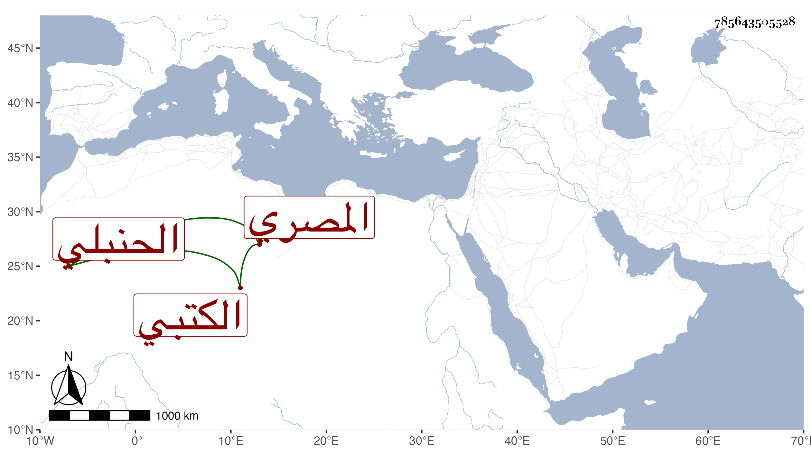

0902Sakhawi.DawLamic.ITO20230111-ara1.EIS1600.785643505528
Biography ID: 785643505528
823
عبد الكريم بن إبراهيم بن أحمد كريم الدين المصري الحنبلي الكتبي والد علي الآتي . قال شيخنا في أنبائه كان من خيار الناس في فنه للطلبة به نفع فإنه كان يشتري الكتب الكثيرة وخصوصا العتيقة ويبيع لمن رام منه الشراء من الطلبة برأس ماله مع فائدة يعينها ويشترط له أنه متى رام بيع ذلك الكتاب يدفع له رأس ماله خاصة فكان الطالب ينتفع بذلك الكتاب دهرا ثم يأتي به إلى السوق فينادي عليه فإن تجاوز الثمن الذي اشتراه به باعه وإن قصر عنه أحضره إليه فدفع له رأس ماله ولا يخرم معهم في ذلك . وكان الناصر فرج ولاه الحسبة على الصلاة فكان يلزم الناس بالصلاة وبتعليم الفاتحة وجرت له في ذلك خطوب يطول ذكرها . وكان مأذونا له في الحكم ولكن لا يتصدى له بل لا يحكم إلا في النادر . وله ورد وقيام في الليل . وأثنى عليه أيضا في ترجمة والده فقال : وما رأيت مثله في الاحسان إلى الطلبة وهو آخر من بقي بسوق الكتبيين . قلت وبلغني أن البدر الزركشي كان يكثر الجلوس بحانوت من حوانيته التي بها ما لا يحتاج لبيعه غالبا طوال النهار غالبا للمطالعة والكتابة ونحو ذلك . مات في حادي عشر ذي القعدة سنة تسع عشرة رحمه الله وإيانا
